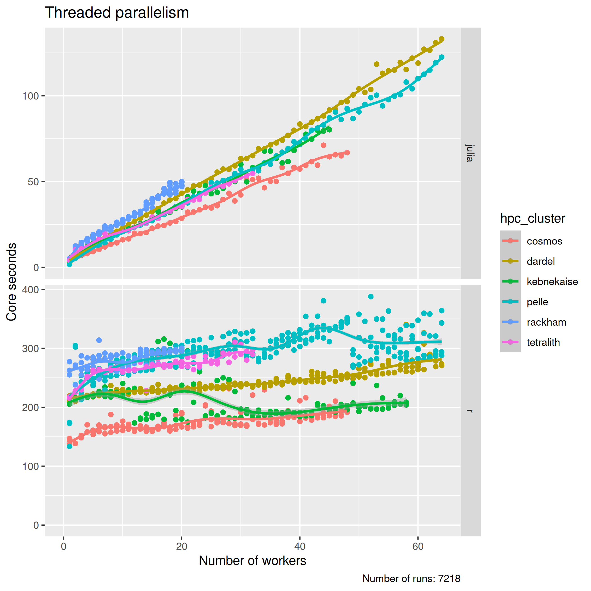
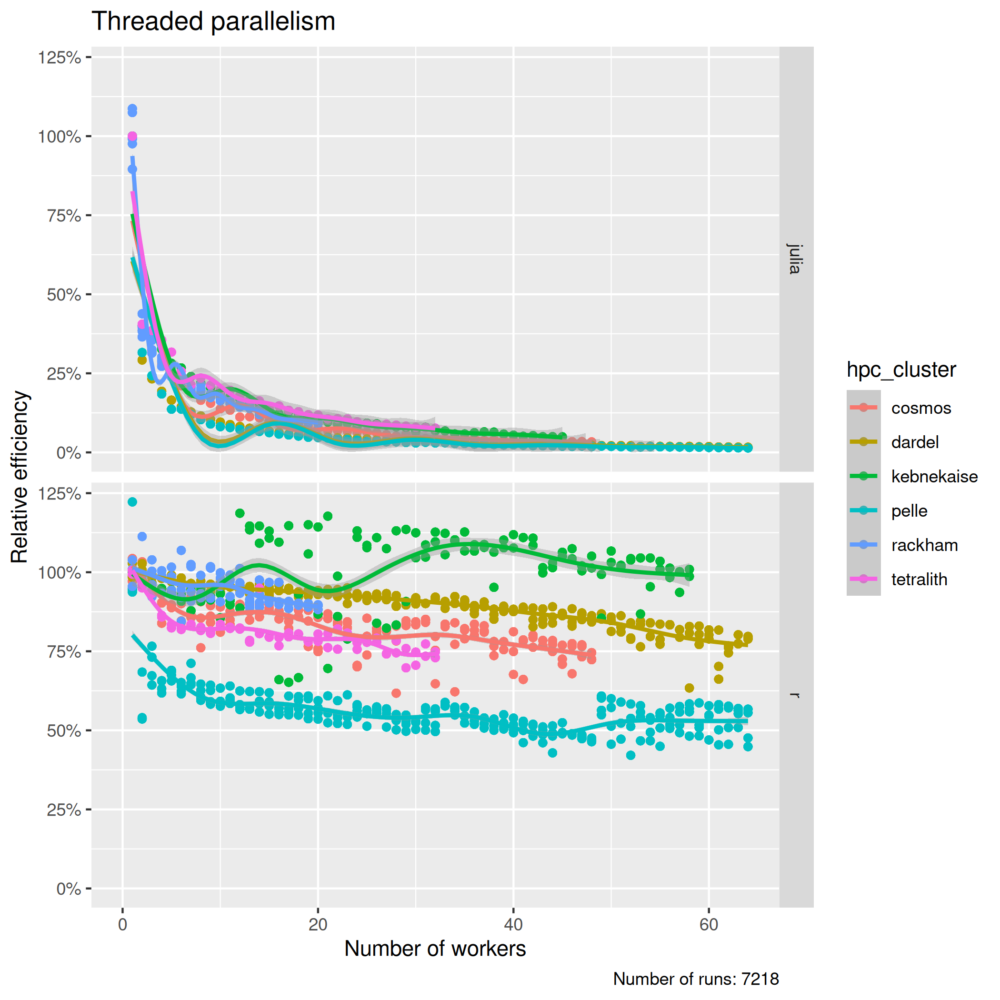

Thread parallelism¶
Learning outcomes
- Understand how to schedule jobs with threaded parallelism
- Understand how code achieves threaded parallelism
- Observe or conclude the costs of threaded parallelism
For teachers
Teaching goals are:
- Schedule and run a job that needs more cores, with a calculation in their favorite language
- Learners have scheduled and run a job that needs more cores, with a calculation in their favorite language
- Learners understand when it is possible/impossible and/or useful/useless to run a job with multiple cores
Prior:
- What is parallel computing?
Feedback:
- When to use parallel computing?
- When not to use parallel computing?
| HPC cluster | Tested |
|---|---|
| Alvis | Not, maybe never |
| Bianca | Need certicate |
| COSMOS | Yes |
| Dardel | Yes |
| Kebnekaise | Running |
| LUMI | Not, maybe never |
| Rackham | Yes |
| Pelle | Yes |
| Tetralith | Yes |
Why thread parallelism is important¶
| Type of parallelism | Number of cores | Number of nodes | Memory | Library |
|---|---|---|---|---|
| Single-threaded | 1 | 1 | As given by operating system | None |
| Threaded/shared memory | Multiple | 1 | Shared by all cores | OpenMP |
| Distributed | Multiple | Multiple | Distributed | OpenMPI |
What is thread parallelism?¶
Calculations that can use multiple cores with a shared memory.
Slurm script¶
This is the script that schedules a job with threaded parallelism.
The goal of the script is to submit a calculation that uses threaded parallelism, with a custom amount of cores.
How do I run it?
You do not, instead you will run the benchmark script below.
However, you can run it as such:
For example:
| Language | Script with calculation |
|---|---|
| Julia | do_julia_2d_integration.sh |
| MATLAB | do_matlab_2d_integration.sh |
| R | do_r_2d_integration.sh |
Calculation script¶
This is the code that performs a job with threaded parallelism.
The goal of the code is to have a fixed unit of work that can be done by a custom amount of cores.
This calculation script is called by the Slurm script, i.e. not directly by a user.
R: How do I run it?
You can run it as such:
On a login node, use 1 core and a grid size of 1 to start the lightest calculation possible:
| Language | Script with calculation |
|---|---|
| Julia | do_2d_integration.jl |
| MATLAB | do_2d_integration.m |
| R | do_2d_integration.R |
Benchmark script¶
This is the script that starts a benchmark, by submitting multiple jobs to the Slurm queue.
The goal of the benchmark script is to do a fixed unit of work with increasingly more cores.
The script is here: benchmark_2d_integration.sh
As the script itself only does light calculations, you can run it directly.
Here is how to call the script:
For example:
If you use the incorrect spelling, the script will help you.
Analysis script¶
The goal of the analysis script is to observe the relation between the number of cores and core runtime.
Exercises¶
Exercise 1: run the calculation script¶
Our benchmark needs some libraries installed.
The goal of this step is to find out if we are ready to go.
Run the calculation script on the login node with a minimal sensible workload:
| Language | Script name | How to run |
|---|---|---|
| Julia | do_2d_integration.jl | ./do_2d_integration.jl 1 1 |
| MATLAB | do_2d_integration.m | ./do_2d_integration.m 1 1 |
| R | do_2d_integration.R | ./do_2d_integration.R 1 1 |
If there are errors about libraries missing, install these, for example, using the R command below:
Exercise 2: start the benchmark on your HPC cluster¶
Exercise 3: read the benchmark script¶
Exercise 4: read the Slurm script¶
Exercise 5: read the calculation script¶
Exercise 6: analyse the results¶
Exercise 7: compare to others¶


Extra questions¶
What went wrong here? Why is this a problem?
[richel@pelle1 thread_parallelism]$ squeue --me
JOBID PARTITION NAME USER ST TIME NODES NODELIST(REASON)
54197 pelle do_r_2d_ richel R 0:14 1 p66
54200 pelle do_r_2d_ richel R 0:14 4 p[64-67]
54216 pelle do_r_2d_ richel R 0:14 3 p[104-106]
54217 pelle do_r_2d_ richel R 0:14 6 p[106-111]
54169 pelle do_r_2d_ richel R 0:15 1 p70
Troubleshooting¶
There is no package called ‘doParallel’¶
Checking the log files:
You see, for example:
HPC cluster: tetralith
Slurm job account used: naiss2025-22-934
Number of cores booked in Slurm: 32
Error in library(doParallel, quietly = TRUE) :
there is no package called ‘doParallel’
Execution halted
Install that package.
[x_ricbi@tetralith3 thread_parallelism]$ module load R/4.4.0-hpc1-gcc-11.3.0-bare
Loading R module. Also loading a compatible "build environment"
Setting environment variable OPENBLAS_NUM_THREADS=1. Increase this for
parallel BLAS/LAPACK (linalg) execution, but don't run
on a login node. The OMP_NUM_THREADS variable is also set to
1, and you may increase this to control other aspects of R's threading. If
using both types of parallelization in your R session, make sure
OMP_NUM_THREADS * OPENBLAS_NUM_THREADS doesn't exceed 32 (the number of
cores on the nodes)
Starting from R v. 3.6.3, NSC by default uses separate library
directories for user installed packages down to bugfix versions, i.e.
X.Y.Z, via the R_LIBS_USER environment variable. This is to avoid possible
dependency mismatches between user installed packages from different R
installations built differently. This has the effect that all
user installed packages must be rebuilt when using different installed
releases of R (following v. 3.6.3) at NSC. Setting the R_LIBS_USER
environment variable to "${HOME}/R/%p-library/%v"
(in your ~/.bashrc file for instance), restores the R standard default.
***************************************************
You have loaded an gcc buildenv module
***************************************************
The buildenv-gcc module makes available:
- Compilers: gcc, gfortran, etc.
- MPI library with mpi-wrapped compilers: OpenMPI with mpicc, mpifort, etc.
- Numerical libraries: OpenBLAS, LAPACK, ScaLAPACK, FFTW
It also makes a set of dependency library modules available via
the regular module command. Just do:
module avail
to see what is available.
NOTE: You shoud never load build environments inside submitted jobs.
(with the single exception of when using supercomputer time to compile code.)
[x_ricbi@tetralith3 thread_parallelism]$ R
R version 4.4.0 (2024-04-24) -- "Puppy Cup"
Copyright (C) 2024 The R Foundation for Statistical Computing
Platform: x86_64-pc-linux-gnu
R is free software and comes with ABSOLUTELY NO WARRANTY.
You are welcome to redistribute it under certain conditions.
Type 'license()' or 'licence()' for distribution details.
R is a collaborative project with many contributors.
Type 'contributors()' for more information and
'citation()' on how to cite R or R packages in publications.
Type 'demo()' for some demos, 'help()' for on-line help, or
'help.start()' for an HTML browser interface to help.
Type 'q()' to quit R.
> install.packages("doParallel")
Warning in install.packages("doParallel") :
'lib = "/software/sse2/tetralith_el9/manual/R/4.4.0/g11/hpc1/lib64/R/library"' is not writable
Would you like to use a personal library instead? (yes/No/cancel) yes
Would you like to create a personal library
‘/home/x_ricbi/R/x86_64-pc-linux-gnu-library/4.4.0’
to install packages into? (yes/No/cancel) yes
--- Please select a CRAN mirror for use in this session ---
also installing the dependencies ‘foreach’, ‘iterators’
trying URL 'https://mirror.accum.se/mirror/CRAN/src/contrib/foreach_1.5.2.tar.gz'
Content type 'application/x-gzip' length 89758 bytes (87 KB)
==================================================
downloaded 87 KB
[...]
Invalid account or account/partition combination specified¶
sbatch: error: Batch job submission failed: Invalid account or account/partition combination specified
You’ve specified the wrong account.
Run projinfo.